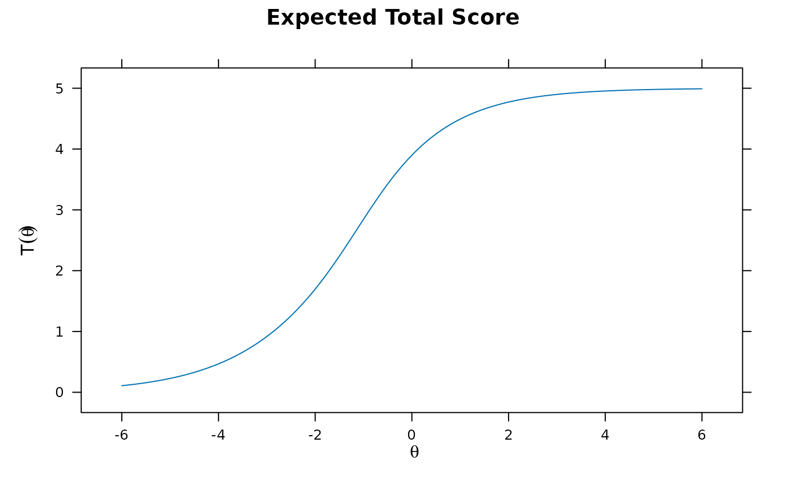

Full-Information Item Factor Analysis (Multidimensional Item Response Theory)
Source:R/mirt.R
mirt.Rdmirt fits a maximum likelihood (or maximum a posteriori) factor analysis model
to any mixture of dichotomous and polytomous data under the item response theory paradigm
using either Cai's (2010) Metropolis-Hastings Robbins-Monro (MHRM) algorithm, with
an EM algorithm approach outlined by Bock and Aitkin (1981) using rectangular or
quasi-Monte Carlo integration grids, or with the stochastic EM (i.e., the first two stages
of the MH-RM algorithm). Models containing 'explanatory' person or item level predictors
can only be included by using the mixedmirt function, though latent
regression models can be fit using the formula input in this function.
Tests that form a two-tier or bi-factor structure should be estimated with the
bfactor function, which uses a dimension reduction EM algorithm for
modeling item parcels. Multiple group analyses (useful for DIF and DTF testing) are
also available using the multipleGroup function.
Usage
mirt(
data,
model = 1,
itemtype = NULL,
guess = 0,
upper = 1,
SE = FALSE,
covdata = NULL,
formula = NULL,
SE.type = "Oakes",
method = "EM",
optimizer = NULL,
dentype = "Gaussian",
pars = NULL,
constrain = NULL,
calcNull = FALSE,
draws = 5000,
survey.weights = NULL,
quadpts = NULL,
TOL = NULL,
gpcm_mats = list(),
grsm.block = NULL,
rsm.block = NULL,
monopoly.k = 1L,
key = NULL,
large = FALSE,
GenRandomPars = FALSE,
accelerate = "Ramsay",
verbose = TRUE,
solnp_args = list(),
nloptr_args = list(),
spline_args = list(),
control = list(),
technical = list(),
...
)Arguments
- data
a
matrixordata.framethat consists of numerically ordered data, organized in the form of integers, with missing data coded asNA(to convert from an ordered factordata.frameseedata.matrix)- model
a string to be passed (or an object returned from)
mirt.model, declaring how the IRT model is to be estimated (loadings, constraints, priors, etc). For exploratory IRT models, a single numeric value indicating the number of factors to extract is also supported. Default is 1, indicating that a unidimensional model will be fit unless otherwise specified- itemtype
type of items to be modeled, declared as either a) a single value to be recycled for each item, b) a vector for each respective item, or c) if applicable, a matrix with columns equal to the number of items and rows equal to the number of latent classes. The
NULLdefault assumes that the items follow a graded or 2PL structure, however they may be changed to the following:'Rasch'- Rasch/partial credit model by constraining slopes to 1 and freely estimating the variance parameters (alternatively, can be specified by applying equality constraints to the slope parameters in'gpcm'; Rasch, 1960)'2PL','3PL','3PLu', and'4PL'- 2-4 parameter logistic model, where3PLestimates the lower asymptote only while3PLuestimates the upper asymptote only (Lord and Novick, 1968; Lord, 1980)'5PL'- 5 parameter logistic model to estimate asymmetric logistic response curves. Currently restricted to unidimensional models'CLL'- complementary log-log link model. Currently restricted to unidimensional models'ULL'- unipolar log-logistic model (Lucke, 2015). Note the use of this itemtype will automatically use a log-normal distribution for the latent traits'graded'- graded response model (Samejima, 1969)'grsm'- graded ratings scale model in the classical IRT parameterization (restricted to unidimensional models; Muraki, 1992)'gpcm'and'gpcmIRT'- generalized partial credit model in the slope-intercept and classical parameterization.'gpcmIRT'is restricted to unidimensional models. Note that optional scoring matrices for'gpcm'are available with thegpcm_matsinput (Muraki, 1992)'rsm'- Rasch rating scale model using the'gpcmIRT'structure (unidimensional only; Andrich, 1978)'nominal'- nominal response model (Bock, 1972)'ideal'- dichotomous ideal point model (Maydeu-Olivares, 2006)'ggum'- generalized graded unfolding model (Roberts, Donoghue, & Laughlin, 2000) and its multidimensional extension'sequential'- multidimensional sequential response model (Tutz, 1990) in slope-intercept form'Tutz'- same as the'sequential'itemtype, except the slopes are fixed to 1 and the latent variance terms are freely estimated (similar to the'Rasch'itemtype input)'PC2PL'and'PC3PL'- 2-3 parameter partially compensatory model. Note that constraining the slopes to be equal across items will reduce the model to Embretson's (a.k.a. Whitely's) multicomponent model (1980).'2PLNRM','3PLNRM','3PLuNRM', and'4PLNRM'- 2-4 parameter nested logistic model, where3PLNRMestimates the lower asymptote only while3PLuNRMestimates the upper asymptote only (Suh and Bolt, 2010)'spline'- spline response model with thebs(default) or thensfunction (Winsberg, Thissen, and Wainer, 1984)'monopoly'- monotonic polynomial model for unidimensional tests for dichotomous and polytomous response data (Falk and Cai, 2016)
Additionally, user defined item classes can also be defined using the
createItemfunction- guess
fixed pseudo-guessing parameters. Can be entered as a single value to assign a global guessing parameter or may be entered as a numeric vector corresponding to each item
- upper
fixed upper bound parameters for 4-PL model. Can be entered as a single value to assign a global guessing parameter or may be entered as a numeric vector corresponding to each item
- SE
logical; estimate the standard errors by computing the parameter information matrix? See
SE.typefor the type of estimates available- covdata
a data.frame of data used for latent regression models
- formula
an R formula (or list of formulas) indicating how the latent traits can be regressed using external covariates in
covdata. If a named list of formulas is supplied (where the names correspond to the latent trait names inmodel) then specific regression effects can be estimated for each factor. Supplying a single formula will estimate the regression parameters for all latent traits by default- SE.type
type of estimation method to use for calculating the parameter information matrix for computing standard errors and
waldtests. Can be:'Richardson','forward', or'central'for the numerical Richardson, forward difference, and central difference evaluation of observed Hessian matrix'crossprod'and'Louis'for standard error computations based on the variance of the Fisher scores as well as Louis' (1982) exact computation of the observed information matrix. Note that Louis' estimates can take a long time to obtain for large sample sizes and long tests'sandwich'for the sandwich covariance estimate based on the'crossprod'and'Oakes'estimates (see Chalmers, 2018, for details)'sandwich.Louis'for the sandwich covariance estimate based on the'crossprod'and'Louis'estimates'Oakes'for Oakes' (1999) method using a central difference approximation (see Chalmers, 2018, for details)'SEM'for the supplemented EM (disables theaccelerateoption automatically; EM only)'Fisher'for the expected information,'complete'for information based on the complete-data Hessian used in EM algorithm'MHRM'and'FMHRM'for stochastic approximations of observed information matrix based on the Robbins-Monro filter or a fixed number of MHRM draws without the RM filter. These are the only options supported whenmethod = 'MHRM''numerical'to obtain the numerical estimate from a call tooptimwhenmethod = 'BL'
Note that both the
'SEM'method becomes very sensitive if the ML solution has has not been reached with sufficient precision, and may be further sensitive if the history of the EM cycles is not stable/sufficient for convergence of the respective estimates. Increasing the number of iterations (increasingNCYCLESand decreasingTOL, see below) will help to improve the accuracy, and can be run in parallel if amirtClusterobject has been defined (this will be used for Oakes' method as well). Additionally, inspecting the symmetry of the ACOV matrix for convergence issues by passingtechnical = list(symmetric = FALSE)can be helpful to determine if a sufficient solution has been reached- method
a character object specifying the estimation algorithm to be used. The default is
'EM', for the standard EM algorithm with fixed quadrature,'QMCEM'for quasi-Monte Carlo EM estimation, or'MCEM'for Monte Carlo EM estimation. The option'MHRM'may also be passed to use the MH-RM algorithm,'SEM'for the Stochastic EM algorithm (first two stages of the MH-RM stage using an optimizer other than a single Newton-Raphson iteration), and'BL'for the Bock and Lieberman approach (generally not recommended for longer tests).The
'EM'is generally effective with 1-3 factors, but methods such as the'QMCEM','MCEM','SEM', or'MHRM'should be used when the dimensions are 3 or more. Note that when the optimizer is stochastic the associatedSE.typeis automatically changed toSE.type = 'MHRM'by default to avoid the use of quadrature- optimizer
a character indicating which numerical optimizer to use. By default, the EM algorithm will use the
'BFGS'when there are no upper and lower bounds box-constraints and'nlminb'when there are.Other options include the Newton-Raphson (
'NR'), which can be more efficient than the'BFGS'but not as stable for more complex IRT models (such as the nominal or nested logit models) and the related'NR1'which is also the Newton-Raphson but consists of only 1 update that has been coupled with RM Hessian (only applicable when the MH-RM algorithm is used). The MH-RM algorithm uses the'NR1'by default, though currently the'BFGS','L-BFGS-B', and'NR'are also supported with this method (with fewer iterations by default) to emulate stochastic EM updates. As well, the'Nelder-Mead'and'SANN'estimators are available, but their routine use generally is not required or recommended.Additionally, estimation subroutines from the
Rsolnpandnloptrpackages are available by passing the arguments'solnp'and'nloptr', respectively. This should be used in conjunction with thesolnp_argsandnloptr_argsspecified below. If equality constraints were specified in the model definition only the parameter with the lowestparnumin thepars = 'values'data.frame is used in the estimation vector passed to the objective function, and group hyper-parameters are omitted. Equality an inequality functions should be of the formfunction(p, optim_args), whereoptim_argsis a list of internally parameters that largely can be ignored when defining constraints (though use ofbrowser()here may be helpful)- dentype
type of density form to use for the latent trait parameters. Current options include
'Gaussian'(default) assumes a multivariate Gaussian distribution with an associated mean vector and variance-covariance matrix'empiricalhist'or'EH'estimates latent distribution using an empirical histogram described by Bock and Aitkin (1981). Only applicable for unidimensional models estimated with the EM algorithm. For this option, the number of cycles, TOL, and quadpts are adjusted accommodate for less precision during estimation (namely:TOL = 3e-5,NCYCLES = 2000,quadpts = 121)'empiricalhist_Woods'or'EHW'estimates latent distribution using an empirical histogram described by Bock and Aitkin (1981), with the same specifications as indentype = 'empiricalhist', but with the extrapolation-interpolation method described by Woods (2007). NOTE: to improve stability in the presence of extreme response styles (i.e., all highest or lowest in each item) thetechnicaloptionzeroExtreme = TRUEmay be required to down-weight the contribution of these problematic patterns'Davidian-#'estimates semi-parametric Davidian curves described by Woods and Lin (2009), where the#placeholder represents the number of Davidian parameters to estimate (e.g.,'Davidian-6'will estimate 6 smoothing parameters). By default, the number ofquadptsis increased to 121, and this method is only applicable for unidimensional models estimated with the EM algorithm
Note that when
itemtype = 'ULL'then a log-normal(0,1) density is used to support the unipolar scaling- pars
a data.frame with the structure of how the starting values, parameter numbers, estimation logical values, etc, are defined. The user may observe how the model defines the values by using
pars = 'values', and this object can in turn be modified and input back into the estimation withpars = mymodifiedpars- constrain
a list of user declared equality constraints. To see how to define the parameters correctly use
pars = 'values'initially to see how the parameters are labeled. To constrain parameters to be equal create a list with separate concatenated vectors signifying which parameters to constrain. For example, to set parameters 1 and 5 equal, and also set parameters 2, 6, and 10 equal useconstrain = list(c(1,5), c(2,6,10)). Constraints can also be specified using themirt.modelsyntax (recommended)- calcNull
logical; calculate the Null model for additional fit statistics (e.g., TLI)? Only applicable if the data contains no NA's and the data is not overly sparse
- draws
the number of Monte Carlo draws to estimate the log-likelihood for the MH-RM algorithm. Default is 5000
- survey.weights
a optional numeric vector of survey weights to apply for each case in the data (EM estimation only). If not specified, all cases are weighted equally (the standard IRT approach). The sum of the
survey.weightsmust equal the total sample size for proper weighting to be applied- quadpts
number of quadrature points per dimension (must be larger than 2). By default the number of quadrature uses the following scheme:
switch(as.character(nfact), '1'=61, '2'=31, '3'=15, '4'=9, '5'=7, 3). However, if the method input is set to'QMCEM'and this argument is left blank then the default number of quasi-Monte Carlo integration nodes will be set to 5000 in total- TOL
convergence threshold for EM or MH-RM; defaults are .0001 and .001. If
SE.type = 'SEM'and this value is not specified, the default is set to1e-5. To evaluate the model using only the starting values passTOL = NaN, and to evaluate the starting values without the log-likelihood passTOL = NA- gpcm_mats
a list of matrices specifying how the scoring coefficients in the (generalized) partial credit model should be constructed. If omitted, the standard gpcm format will be used (i.e.,
seq(0, k, by = 1)for each trait). This input should be used if traits should be scored different for each category (e.g.,matrix(c(0:3, 1,0,0,0), 4, 2)for a two-dimensional model where the first trait is scored like a gpcm, but the second trait is only positively indicated when the first category is selected). Can be used whenitemtypes are'gpcm'or'Rasch', but only when the respective element ingpcm_matsis notNULL- grsm.block
an optional numeric vector indicating where the blocking should occur when using the grsm, NA represents items that do not belong to the grsm block (other items that may be estimated in the test data). For example, to specify two blocks of 3 with a 2PL item for the last item:
grsm.block = c(rep(1,3), rep(2,3), NA). If NULL the all items are assumed to be within the same group and therefore have the same number of item categories- rsm.block
same as
grsm.block, but for'rsm'blocks- monopoly.k
a vector of values (or a single value to repeated for each item) which indicate the degree of the monotone polynomial fitted, where the monotone polynomial corresponds to
monopoly.k * 2 + 1(e.g.,monopoly.k = 2fits a 5th degree polynomial). Default ismonopoly.k = 1, which fits a 3rd degree polynomial- key
a numeric vector of the response scoring key. Required when using nested logit item types, and must be the same length as the number of items used. Items that are not nested logit will ignore this vector, so use
NAin item locations that are not applicable- large
a
logicalindicating whether unique response patterns should be obtained prior to performing the estimation so as to avoid repeating computations on identical patterns. The defaultTRUEprovides the correct degrees of freedom for the model since all unique patterns are tallied (typically only affects goodness of fit statistics such as G2, but also will influence nested model comparison methods such asanova(mod1, mod2)), whileFALSEwill use the number of rows indataas a placeholder for the total degrees of freedom. As such, model objects should only be compared if all flags were set toTRUEor all were set toFALSEAlternatively, if the collapse table of frequencies is desired for the purpose of saving computations (i.e., only computing the collapsed frequencies for the data onte-time) then a character vector can be passed with the arguement
large = 'return'to return a list of all the desired table information used bymirt. This list object can then be reused by passing it back into thelargeargument to avoid re-tallying the data again (again, useful when the dataset are very large and computing the tabulated data is computationally burdensome). This strategy is shown below:- Compute organized data
e.g.,
internaldat <- mirt(Science, 1, large = 'return')- Pass the organized data to all estimation functions
e.g.,
mod <- mirt(Science, 1, large = internaldat)
- GenRandomPars
logical; generate random starting values prior to optimization instead of using the fixed internal starting values?
- accelerate
a character vector indicating the type of acceleration to use. Default is
'Ramsay', but may also be'squarem'for the SQUAREM procedure (specifically, the gSqS3 approach) described in Varadhan and Roldand (2008). To disable the acceleration, pass'none'- verbose
logical; print observed- (EM) or complete-data (MHRM) log-likelihood after each iteration cycle? Default is TRUE
- solnp_args
a list of arguments to be passed to the
solnp::solnp()function for equality constraints, inequality constraints, etc- nloptr_args
a list of arguments to be passed to the
nloptr::nloptr()function for equality constraints, inequality constraints, etc- spline_args
a named list of lists containing information to be passed to the
bs(default) andnsfor each spline itemtype. Each element must refer to the name of the itemtype with the spline, while the internal list names refer to the arguments which are passed. For example, if item 2 were called 'read2', and item 5 were called 'read5', both of which were of itemtype 'spline' but item 5 should use thensform, then a modified list for each input might be of the form:spline_args = list(read2 = list(degree = 4), read5 = list(fun = 'ns', knots = c(-2, 2)))This code input changes the
bs()splines function to have adegree = 4input, while the second element changes to thens()function with knots set ac(-2, 2)- control
a list passed to the respective optimizers (i.e.,
optim(),nlminb(), etc). Additional arguments have been included for the'NR'optimizer:'tol'for the convergence tolerance in the M-step (default isTOL/1000), while the default number of iterations for the Newton-Raphson optimizer is 50 (modified with the'maxit'control input)- technical
a list containing lower level technical parameters for estimation. May be:
- NCYCLES
maximum number of EM or MH-RM cycles; defaults are 500 and 2000
- MAXQUAD
maximum number of quadratures, which you can increase if you have more than 4GB or RAM on your PC; default 20000
- theta_lim
range of integration grid for each dimension; default is
c(-6, 6). Note that whenitemtype = 'ULL'a log-normal distribution is used and the range is change toc(.01, and 6^2), where the second term is the square of thetheta_liminput instead- set.seed
seed number used during estimation. Default is 12345
- SEtol
standard error tolerance criteria for the S-EM and MHRM computation of the information matrix. Default is 1e-3
- symmetric
logical; force S-EM/Oakes information matrix estimates to be symmetric? Default is TRUE so that computation of standard errors are more stable. Setting this to FALSE can help to detect solutions that have not reached the ML estimate
- SEM_window
ratio of values used to define the S-EM window based on the observed likelihood differences across EM iterations. The default is
c(0, 1 - SEtol), which provides nearly the very full S-EM window (i.e., nearly all EM cycles used). To use the a smaller SEM window change the window to to something likec(.9, .999)to start at a point farther into the EM history- warn
logical; include warning messages during estimation? Default is TRUE
- message
logical; include general messages during estimation? Default is TRUE
- customK
a numeric vector used to explicitly declare the number of response categories for each item. This should only be used when constructing mirt model for reasons other than parameter estimation (such as to obtain factor scores), and requires that the input data all have 0 as the lowest category. The format is the same as the
extract.mirt(mod, 'K')slot in all converged models- customPriorFun
a custom function used to determine the normalized density for integration in the EM algorithm. Must be of the form
function(Theta, Etable){...}, and return a numeric vector with the same length as number of rows inTheta. TheEtableinput contains the aggregated table generated from the current E-step computations. For proper integration, the returned vector should sum to 1 (i.e., normalized). Note that if using theEtableit will be NULL on the first call, therefore the prior will have to deal with this issue accordingly- zeroExtreme
logical; assign extreme response patterns a
survey.weightof 0 (formally equivalent to removing these data vectors during estimation)? Whendentype = 'EHW', where Woods' extrapolation is utilized, this option may be required if the extrapolation causes expected densities to tend towards positive or negative infinity. The default isFALSE- customTheta
a custom
Thetagrid, in matrix form, used for integration. If not defined, the grid is determined internally based on the number ofquadpts- nconstrain
same specification as the
constrainlist argument, however imposes a negative equality constraint instead (e.g., \(a12 = -a21\), which is specified asnconstrain = list(c(12, 21))). Note that each specification in the list must be of length 2, where the second element is taken to be -1 times the first element- delta
the deviation term used in numerical estimates when computing the ACOV matrix with the 'forward' or 'central' numerical approaches, as well as Oakes' method with the Richardson extrapolation. Default is 1e-5
- parallel
logical; use the parallel cluster defined by
mirtCluster? Default is TRUE- storeEMhistory
logical; store the iteration history when using the EM algorithm? Default is FALSE. When TRUE, use
extract.mirtto extract- internal_constraints
logical; include the internal constraints when using certain IRT models (e.g., 'grsm' itemtype). Disable this if you want to use special optimizers such as the solnp. Default is
TRUE- gain
a vector of two values specifying the numerator and exponent values for the RM gain function \((val1 / cycle)^val2\). Default is
c(0.10, 0.75)- BURNIN
number of burn in cycles (stage 1) in MH-RM; default is 150
- SEMCYCLES
number of SEM cycles (stage 2) in MH-RM; default is 100
- MHDRAWS
number of Metropolis-Hasting draws to use in the MH-RM at each iteration; default is 5
- MHcand
a vector of values used to tune the MH sampler. Larger values will cause the acceptance ratio to decrease. One value is required for each group in unconditional item factor analysis (
mixedmirt()requires additional values for random effect). If null, these values are determined internally, attempting to tune the acceptance of the draws to be between .1 and .4- MHRM_SE_draws
number of fixed draws to use when
SE=TRUEandSE.type = 'FMHRM'and the maximum number of draws whenSE.type = 'MHRM'. Default is 2000- MCEM_draws
a function used to determine the number of quadrature points to draw for the
'MCEM'method. Must include one argument which indicates the iteration number of the EM cycle. Default isfunction(cycles) 500 + (cycles - 1)*2, which starts the number of draws at 500 and increases by 2 after each full EM iteration- info_if_converged
logical; compute the information matrix when using the MH-RM algorithm only if the model converged within a suitable number of iterations? Default is
TRUE- logLik_if_converged
logical; compute the observed log-likelihood when using the MH-RM algorithm only if the model converged within a suitable number of iterations? Default is
TRUE- keep_vcov_PD
logical; attempt to keep the variance-covariance matrix of the latent traits positive definite during estimation in the EM algorithm? This generally improves the convergence properties when the traits are highly correlated. Default is
TRUE
- ...
additional arguments to be passed
Value
function returns an object of class SingleGroupClass
(SingleGroupClass-class)
Confirmatory and Exploratory IRT
Specification of the confirmatory item factor analysis model follows many of
the rules in the structural equation modeling framework for confirmatory factor analysis. The
variances of the latent factors are automatically fixed to 1 to help
facilitate model identification. All parameters may be fixed to constant
values or set equal to other parameters using the appropriate declarations.
Confirmatory models may also contain 'explanatory' person or item level predictors, though
including predictors is currently limited to the mixedmirt function.
When specifying a single number greater than 1 as the model input to mirt
an exploratory IRT model will be estimated. Rotation and target matrix options are available
if they are passed to generic functions such as summary-method and
fscores. Factor means and variances are fixed to ensure proper identification.
If the model is an exploratory item factor analysis estimation will begin
by computing a matrix of quasi-polychoric correlations. A
factor analysis with nfact is then extracted and item parameters are
estimated by \(a_{ij} = f_{ij}/u_j\), where \(f_{ij}\) is the factor
loading for the jth item on the ith factor, and \(u_j\) is
the square root of the factor uniqueness, \(\sqrt{1 - h_j^2}\). The
initial intercept parameters are determined by calculating the inverse
normal of the item facility (i.e., item easiness), \(q_j\), to obtain
\(d_j = q_j / u_j\). A similar implementation is also used for obtaining
initial values for polytomous items.
A note on upper and lower bound parameters
Internally the \(g\) and \(u\) parameters are transformed using a logit
transformation (\(log(x/(1-x))\)), and can be reversed by using \(1 / (1 + exp(-x))\)
following convergence. This also applies when computing confidence intervals for these
parameters, and is done so automatically if coef(mod, rawug = FALSE).
As such, when applying prior distributions to these parameters it is recommended to use a prior
that ranges from negative infinity to positive infinity, such as the normally distributed
prior via the 'norm' input (see mirt.model).
Convergence for quadrature methods
Unrestricted full-information factor analysis is known to have problems with convergence, and some items may need to be constrained or removed entirely to allow for an acceptable solution. As a general rule dichotomous items with means greater than .95, or items that are only .05 greater than the guessing parameter, should be considered for removal from the analysis or treated with prior parameter distributions. The same type of reasoning is applicable when including upper bound parameters as well. For polytomous items, if categories are rarely endorsed then this will cause similar issues. Also, increasing the number of quadrature points per dimension, or using the quasi-Monte Carlo integration method, may help to stabilize the estimation process in higher dimensions. Finally, solutions that are not well defined also will have difficulty converging, and can indicate that the model has been misspecified (e.g., extracting too many dimensions).
Convergence for MH-RM method
For the MH-RM algorithm, when the number of iterations grows very high (e.g., greater than 1500)
or when Max Change = .2500 values are repeatedly printed
to the console too often (indicating that the parameters were being constrained since they are
naturally moving in steps greater than 0.25) then the model may either be ill defined or have a
very flat likelihood surface, and genuine maximum-likelihood parameter estimates may be difficult
to find. Standard errors are computed following the model convergence by passing
SE = TRUE, to perform an addition MH-RM stage but treating the maximum-likelihood
estimates as fixed points.
Additional helper functions
Additional functions are available in the package which can be useful pre- and post-estimation. These are:
mirt.modelDefine the IRT model specification use special syntax. Useful for defining between and within group parameter constraints, prior parameter distributions, and specifying the slope coefficients for each factor
coef-methodExtract raw coefficients from the model, along with their standard errors and confidence intervals
summary-methodExtract standardized loadings from model. Accepts a
rotateargument for exploratory item response modelanova-methodCompare nested models using likelihood ratio statistics as well as information criteria such as the AIC and BIC
residuals-methodCompute pairwise residuals between each item using methods such as the LD statistic (Chen & Thissen, 1997), as well as response pattern residuals
plot-methodPlot various types of test level plots including the test score and information functions and more
itemplotPlot various types of item level plots, including the score, standard error, and information functions, and more
createItemCreate a customized
itemtypethat does not currently exist in the packageimputeMissingImpute missing data given some computed Theta matrix
fscoresFind predicted scores for the latent traits using estimation methods such as EAP, MAP, ML, WLE, and EAPsum
waldCompute Wald statistics follow the convergence of a model with a suitable information matrix
M2Limited information goodness of fit test statistic based to determine how well the model fits the data
itemfitandpersonfitGoodness of fit statistics at the item and person levels, such as the S-X2, infit, outfit, and more
boot.mirtCompute estimated parameter confidence intervals via the bootstrap methods
mirtClusterDefine a cluster for the package functions to use for capitalizing on multi-core architecture to utilize available CPUs when possible. Will help to decrease estimation times for tasks that can be run in parallel
IRT Models
The parameter labels use the follow convention, here using two factors and \(K\) as the total number of categories (using \(k\) for specific category instances).
- Rasch
Only one intercept estimated, and the latent variance of \(\theta\) is freely estimated. If the data have more than two categories then a partial credit model is used instead (see 'gpcm' below). $$P(x = 1|\theta, d) = \frac{1}{1 + exp(-(\theta + d))}$$
- 2-4PL
Depending on the model \(u\) may be equal to 1 and \(g\) may be equal to 0. $$P(x = 1|\theta, \psi) = g + \frac{(u - g)}{ 1 + exp(-(a_1 * \theta_1 + a_2 * \theta_2 + d))}$$
- 5PL
Currently restricted to unidimensional models $$P(x = 1|\theta, \psi) = g + \frac{(u - g)}{ 1 + exp(-(a_1 * \theta_1 + d))^S}$$ where \(S\) allows for asymmetry in the response function and is transformation constrained to be greater than 0 (i.e.,
log(S)is estimated rather thanS)- CLL
Complementary log-log model (see Shim, Bonifay, and Wiedermann, 2022) $$P(x = 1|\theta, b) = 1 - exp(-exp(\theta - b))$$ Currently restricted to unidimensional dichotomous data.
- graded
The graded model consists of sequential 2PL models, $$P(x = k | \theta, \psi) = P(x \ge k | \theta, \phi) - P(x \ge k + 1 | \theta, \phi)$$ Note that \(P(x \ge 1 | \theta, \phi) = 1\) while \(P(x \ge K + 1 | \theta, \phi) = 0\)
- ULL
The unipolar log-logistic model (ULL; Lucke, 2015) is defined the same as the graded response model, however $$P(x \le k | \theta, \psi) = \frac{\lambda_k\theta^\eta}{1 + \lambda_k\theta^\eta}$$. Internally the \(\lambda\) parameters are exponentiated to keep them positive, and should therefore the reported estimates should be interpreted in log units
- grsm
A more constrained version of the graded model where graded spacing is equal across item blocks and only adjusted by a single 'difficulty' parameter (c) while the latent variance of \(\theta\) is freely estimated (see Muraki, 1990 for this exact form). This is restricted to unidimensional models only.
- gpcm/nominal
For the gpcm the \(d\) values are treated as fixed and ordered values from \(0:(K-1)\) (in the nominal model \(d_0\) is also set to 0). Additionally, for identification in the nominal model \(ak_0 = 0\), \(ak_{(K-1)} = (K - 1)\). $$P(x = k | \theta, \psi) = \frac{exp(ak_{k-1} * (a_1 * \theta_1 + a_2 * \theta_2) + d_{k-1})} {\sum_{k=1}^K exp(ak_{k-1} * (a_1 * \theta_1 + a_2 * \theta_2) + d_{k-1})}$$
For the partial credit model (when
itemtype = 'Rasch'; unidimensional only) the above model is further constrained so that \(ak = (0,1,\ldots, K-1)\), \(a_1 = 1\), and the latent variance of \(\theta_1\) is freely estimated. Alternatively, the partial credit model can be obtained by containing all the slope parameters in the gpcms to be equal. More specific scoring function may be included by passing a suitable list or matrices to thegpcm_matsinput argument.In the nominal model this parametrization helps to identify the empirical ordering of the categories by inspecting the \(ak\) values. Larger values indicate that the item category is more positively related to the latent trait(s) being measured. For instance, if an item was truly ordinal (such as a Likert scale), and had 4 response categories, we would expect to see \(ak_0 < ak_1 < ak_2 < ak_3\) following estimation. If on the other hand \(ak_0 > ak_1\) then it would appear that the second category is less related to to the trait than the first, and therefore the second category should be understood as the 'lowest score'.
NOTE: The nominal model can become numerical unstable if poor choices for the high and low values are chosen, resulting in
akvalues greater thanabs(10)or more. It is recommended to choose high and low anchors that cause the estimated parameters to fall between 0 and \(K - 1\) either by theoretical means or by re-estimating the model with better values following convergence.- gpcmIRT and rsm
The gpcmIRT model is the classical generalized partial credit model for unidimensional response data. It will obtain the same fit as the
gpcmpresented above, however the parameterization allows for the Rasch/generalized rating scale model as a special case.E.g., for a K = 4 category response model,
$$P(x = 0 | \theta, \psi) = exp(0) / G$$ $$P(x = 1 | \theta, \psi) = exp(a(\theta - b1) + c) / G$$ $$P(x = 2 | \theta, \psi) = exp(a(2\theta - b1 - b2) + 2c) / G$$ $$P(x = 3 | \theta, \psi) = exp(a(3\theta - b1 - b2 - b3) + 3c) / G$$ where $$G = exp(0) + exp(a(\theta - b1) + c) + exp(a(2\theta - b1 - b2) + 2c) + exp(a(3\theta - b1 - b2 - b3) + 3c)$$ Here \(a\) is the slope parameter, the \(b\) parameters are the threshold values for each adjacent category, and \(c\) is the so-called difficulty parameter when a rating scale model is fitted (otherwise, \(c = 0\) and it drops out of the computations).
The gpcmIRT can be constrained to the partial credit IRT model by either constraining all the slopes to be equal, or setting the slopes to 1 and freeing the latent variance parameter.
Finally, the rsm is a more constrained version of the (generalized) partial credit model where the spacing is equal across item blocks and only adjusted by a single 'difficulty' parameter (c). Note that this is analogous to the relationship between the graded model and the grsm (with an additional constraint regarding the fixed discrimination parameters).
- sequential/Tutz
The multidimensional sequential response model has the form $$P(x = k | \theta, \psi) = \prod (1 - F(a_1 \theta_1 + a_2 \theta_2 + d_{sk})) F(a_1 \theta_1 + a_2 \theta_2 + d_{jk})$$ where \(F(\cdot)\) is the cumulative logistic function. The Tutz variant of this model (Tutz, 1990) (via
itemtype = 'Tutz') assumes that the slope terms are all equal to 1 and the latent variance terms are estimated (i.e., is a Rasch variant).- ideal
The ideal point model has the form, with the upper bound constraint on \(d\) set to 0: $$P(x = 1 | \theta, \psi) = exp(-0.5 * (a_1 * \theta_1 + a_2 * \theta_2 + d)^2)$$
- partcomp
Partially compensatory models consist of the product of 2PL probability curves. $$P(x = 1 | \theta, \psi) = g + (1 - g) (\frac{1}{1 + exp(-(a_1 * \theta_1 + d_1))}^c_1 * \frac{1}{1 + exp(-(a_2 * \theta_2 + d_2))}^c_2)$$
where $c_1$ and $c_2$ are binary indicator variables reflecting whether the item should include the select compensatory component (1) or not (0). Note that constraining the slopes to be equal across items will reduce the model to Embretson's (Whitely's) multicomponent model (1980).
- 2-4PLNRM
Nested logistic curves for modeling distractor items. Requires a scoring key. The model is broken into two components for the probability of endorsement. For successful endorsement the probability trace is the 1-4PL model, while for unsuccessful endorsement: $$P(x = 0 | \theta, \psi) = (1 - P_{1-4PL}(x = 1 | \theta, \psi)) * P_{nominal}(x = k | \theta, \psi)$$ which is the product of the complement of the dichotomous trace line with the nominal response model. In the nominal model, the slope parameters defined above are constrained to be 1's, while the last value of the \(ak\) is freely estimated.
- ggum
The (multidimensional) generalized graded unfolding model is a class of ideal point models useful for ordinal response data. The form is $$P(z=k|\theta,\psi)=\frac{exp\left[\left(z\sqrt{\sum_{d=1}^{D} a_{id}^{2}(\theta_{jd}-b_{id})^{2}}\right)+\sum_{k=0}^{z}\psi_{ik}\right]+ exp\left[\left((M-z)\sqrt{\sum_{d=1}^{D}a_{id}^{2}(\theta_{jd}-b_{id})^{2}}\right)+ \sum_{k=0}^{z}\psi_{ik}\right]}{\sum_{w=0}^{C}\left(exp\left[\left(w \sqrt{\sum_{d=1}^{D}a_{id}^{2}(\theta_{jd}-b_{id})^{2}}\right)+ \sum_{k=0}^{z}\psi_{ik}\right]+exp\left[\left((M-w) \sqrt{\sum_{d=1}^{D}a_{id}^{2}(\theta_{jd}-b_{id})^{2}}\right)+ \sum_{k=0}^{z}\psi_{ik}\right]\right)}$$ where \(\theta_{jd}\) is the location of the \(j\)th individual on the \(d\)th dimension, \(b_{id}\) is the difficulty location of the \(i\)th item on the \(d\)th dimension, \(a_{id}\) is the discrimination of the \(j\)th individual on the \(d\)th dimension (where the discrimination values are constrained to be positive), \(\psi_{ik}\) is the \(k\)th subjective response category threshold for the \(i\)th item, assumed to be symmetric about the item and constant across dimensions, where \(\psi_{ik} = \sum_{d=1}^D a_{id} t_{ik}\) \(z = 1,2,\ldots, C\) (where \(C\) is the number of categories minus 1), and \(M = 2C + 1\).
- spline
Spline response models attempt to model the response curves uses non-linear and potentially non-monotonic patterns. The form is $$P(x = 1|\theta, \eta) = \frac{1}{1 + exp(-(\eta_1 * X_1 + \eta_2 * X_2 + \cdots + \eta_n * X_n))}$$ where the \(X_n\) are from the spline design matrix \(X\) organized from the grid of \(\theta\) values. B-splines with a natural or polynomial basis are supported, and the
interceptinput is set toTRUEby default.- monopoly
Monotone polynomial model for polytomous response data of the form $$P(x = k | \theta, \psi) = \frac{exp(\sum_1^k (m^*(\psi) + \xi_{c-1})} {\sum_1^C exp(\sum_1^K (m^*(\psi) + \xi_{c-1}))}$$ where \(m^*(\psi)\) is the monotone polynomial function without the intercept.
HTML help files, exercises, and examples
To access examples, vignettes, and exercise files that have been generated with knitr please visit https://github.com/philchalmers/mirt/wiki.
References
Andrich, D. (1978). A rating scale formulation for ordered response categories. Psychometrika, 43, 561-573.
Bock, R. D., & Aitkin, M. (1981). Marginal maximum likelihood estimation of item parameters: Application of an EM algorithm. Psychometrika, 46(4), 443-459.
Bock, R. D., Gibbons, R., & Muraki, E. (1988). Full-Information Item Factor Analysis. Applied Psychological Measurement, 12(3), 261-280.
Bock, R. D. & Lieberman, M. (1970). Fitting a response model for n dichotomously scored items. Psychometrika, 35, 179-197.
Cai, L. (2010a). High-Dimensional exploratory item factor analysis by a Metropolis-Hastings Robbins-Monro algorithm. Psychometrika, 75, 33-57.
Cai, L. (2010b). Metropolis-Hastings Robbins-Monro algorithm for confirmatory item factor analysis. Journal of Educational and Behavioral Statistics, 35, 307-335.
Chalmers, R., P. (2012). mirt: A Multidimensional Item Response Theory Package for the R Environment. Journal of Statistical Software, 48(6), 1-29. doi:10.18637/jss.v048.i06
Chalmers, R. P. (2015). Extended Mixed-Effects Item Response Models with the MH-RM Algorithm. Journal of Educational Measurement, 52, 200-222. doi:10.1111/jedm.12072
Chalmers, R. P. (2018). Numerical Approximation of the Observed Information Matrix with Oakes' Identity. British Journal of Mathematical and Statistical Psychology DOI: 10.1111/bmsp.12127
Chalmers, R., P. & Flora, D. (2014). Maximum-likelihood Estimation of Noncompensatory IRT Models with the MH-RM Algorithm. Applied Psychological Measurement, 38, 339-358. doi:10.1177/0146621614520958
Chen, W. H. & Thissen, D. (1997). Local dependence indices for item pairs using item response theory. Journal of Educational and Behavioral Statistics, 22, 265-289.
Falk, C. F. & Cai, L. (2016). Maximum Marginal Likelihood Estimation of a Monotonic Polynomial Generalized Partial Credit Model with Applications to Multiple Group Analysis. Psychometrika, 81, 434-460.
Lord, F. M. & Novick, M. R. (1968). Statistical theory of mental test scores. Addison-Wesley.
Lucke, J. F. (2015). Unipolar item response models. In S. P. Reise & D. A. Revicki (Eds.), Handbook of item response theory modeling: Applications to typical performance assessment (pp. 272-284). New York, NY: Routledge/Taylor & Francis Group.
Ramsay, J. O. (1975). Solving implicit equations in psychometric data analysis. Psychometrika, 40, 337-360.
Rasch, G. (1960). Probabilistic models for some intelligence and attainment tests. Danish Institute for Educational Research.
Roberts, J. S., Donoghue, J. R., & Laughlin, J. E. (2000). A General Item Response Theory Model for Unfolding Unidimensional Polytomous Responses. Applied Psychological Measurement, 24, 3-32.
Shim, H., Bonifay, W., & Wiedermann, W. (2022). Parsimonious asymmetric item response theory modeling with the complementary log-log link. Behavior Research Methods, 55, 200-219.
Maydeu-Olivares, A., Hernandez, A. & McDonald, R. P. (2006). A Multidimensional Ideal Point Item Response Theory Model for Binary Data. Multivariate Behavioral Research, 41, 445-471.
Muraki, E. (1990). Fitting a polytomous item response model to Likert-type data. Applied Psychological Measurement, 14, 59-71.
Muraki, E. (1992). A generalized partial credit model: Application of an EM algorithm. Applied Psychological Measurement, 16, 159-176.
Muraki, E. & Carlson, E. B. (1995). Full-information factor analysis for polytomous item responses. Applied Psychological Measurement, 19, 73-90.
Samejima, F. (1969). Estimation of latent ability using a response pattern of graded scores. Psychometrika Monographs, 34.
Suh, Y. & Bolt, D. (2010). Nested logit models for multiple-choice item response data. Psychometrika, 75, 454-473.
Sympson, J. B. (1977). A model for testing with multidimensional items. Proceedings of the 1977 Computerized Adaptive Testing Conference.
Thissen, D. (1982). Marginal maximum likelihood estimation for the one-parameter logistic model. Psychometrika, 47, 175-186.
Tutz, G. (1990). Sequential item response models with ordered response. British Journal of Mathematical and Statistical Psychology, 43, 39-55.
Varadhan, R. & Roland, C. (2008). Simple and Globally Convergent Methods for Accelerating the Convergence of Any EM Algorithm. Scandinavian Journal of Statistics, 35, 335-353.
Whitely, S. E. (1980). Multicomponent latent trait models for ability tests. Psychometrika, 45(4), 470-494.
Wood, R., Wilson, D. T., Gibbons, R. D., Schilling, S. G., Muraki, E., & Bock, R. D. (2003). TESTFACT 4 for Windows: Test Scoring, Item Statistics, and Full-information Item Factor Analysis [Computer software]. Lincolnwood, IL: Scientific Software International.
Woods, C. M., and Lin, N. (2009). Item Response Theory With Estimation of the Latent Density Using Davidian Curves. Applied Psychological Measurement,33(2), 102-117.
Author
Phil Chalmers rphilip.chalmers@gmail.com
Examples
# load LSAT section 7 data and compute 1 and 2 factor models
data <- expand.table(LSAT7)
itemstats(data)
#> $overall
#> N mean_total.score sd_total.score ave.r sd.r alpha SEM.alpha
#> 1000 3.707 1.199 0.143 0.052 0.453 0.886
#>
#> $itemstats
#> N mean sd total.r total.r_if_rm alpha_if_rm
#> Item.1 1000 0.828 0.378 0.530 0.246 0.396
#> Item.2 1000 0.658 0.475 0.600 0.247 0.394
#> Item.3 1000 0.772 0.420 0.611 0.313 0.345
#> Item.4 1000 0.606 0.489 0.592 0.223 0.415
#> Item.5 1000 0.843 0.364 0.461 0.175 0.438
#>
#> $proportions
#> 0 1
#> Item.1 0.172 0.828
#> Item.2 0.342 0.658
#> Item.3 0.228 0.772
#> Item.4 0.394 0.606
#> Item.5 0.157 0.843
#>
(mod1 <- mirt(data, 1))
#>
Iteration: 1, Log-Lik: -2668.786, Max-Change: 0.18243
Iteration: 2, Log-Lik: -2663.691, Max-Change: 0.13637
Iteration: 3, Log-Lik: -2661.454, Max-Change: 0.10231
Iteration: 4, Log-Lik: -2659.430, Max-Change: 0.04181
Iteration: 5, Log-Lik: -2659.241, Max-Change: 0.03417
Iteration: 6, Log-Lik: -2659.113, Max-Change: 0.02911
Iteration: 7, Log-Lik: -2658.812, Max-Change: 0.00456
Iteration: 8, Log-Lik: -2658.809, Max-Change: 0.00363
Iteration: 9, Log-Lik: -2658.808, Max-Change: 0.00273
Iteration: 10, Log-Lik: -2658.806, Max-Change: 0.00144
Iteration: 11, Log-Lik: -2658.806, Max-Change: 0.00118
Iteration: 12, Log-Lik: -2658.806, Max-Change: 0.00101
Iteration: 13, Log-Lik: -2658.805, Max-Change: 0.00042
Iteration: 14, Log-Lik: -2658.805, Max-Change: 0.00025
Iteration: 15, Log-Lik: -2658.805, Max-Change: 0.00026
Iteration: 16, Log-Lik: -2658.805, Max-Change: 0.00023
Iteration: 17, Log-Lik: -2658.805, Max-Change: 0.00023
Iteration: 18, Log-Lik: -2658.805, Max-Change: 0.00021
Iteration: 19, Log-Lik: -2658.805, Max-Change: 0.00019
Iteration: 20, Log-Lik: -2658.805, Max-Change: 0.00017
Iteration: 21, Log-Lik: -2658.805, Max-Change: 0.00017
Iteration: 22, Log-Lik: -2658.805, Max-Change: 0.00015
Iteration: 23, Log-Lik: -2658.805, Max-Change: 0.00015
Iteration: 24, Log-Lik: -2658.805, Max-Change: 0.00013
Iteration: 25, Log-Lik: -2658.805, Max-Change: 0.00013
Iteration: 26, Log-Lik: -2658.805, Max-Change: 0.00011
Iteration: 27, Log-Lik: -2658.805, Max-Change: 0.00011
Iteration: 28, Log-Lik: -2658.805, Max-Change: 0.00010
#>
#> Call:
#> mirt(data = data, model = 1)
#>
#> Full-information item factor analysis with 1 factor(s).
#> Converged within 1e-04 tolerance after 28 EM iterations.
#> mirt version: 1.42.3
#> M-step optimizer: BFGS
#> EM acceleration: Ramsay
#> Number of rectangular quadrature: 61
#> Latent density type: Gaussian
#>
#> Log-likelihood = -2658.805
#> Estimated parameters: 10
#> AIC = 5337.61
#> BIC = 5386.688; SABIC = 5354.927
#> G2 (21) = 31.7, p = 0.0628
#> RMSEA = 0.023, CFI = NaN, TLI = NaN
coef(mod1)
#> $Item.1
#> a1 d g u
#> par 0.988 1.856 0 1
#>
#> $Item.2
#> a1 d g u
#> par 1.081 0.808 0 1
#>
#> $Item.3
#> a1 d g u
#> par 1.706 1.804 0 1
#>
#> $Item.4
#> a1 d g u
#> par 0.765 0.486 0 1
#>
#> $Item.5
#> a1 d g u
#> par 0.736 1.855 0 1
#>
#> $GroupPars
#> MEAN_1 COV_11
#> par 0 1
#>
summary(mod1)
#> F1 h2
#> Item.1 0.502 0.252
#> Item.2 0.536 0.287
#> Item.3 0.708 0.501
#> Item.4 0.410 0.168
#> Item.5 0.397 0.157
#>
#> SS loadings: 1.366
#> Proportion Var: 0.273
#>
#> Factor correlations:
#>
#> F1
#> F1 1
plot(mod1)

plot(mod1, type = 'trace')
 if (FALSE) { # \dontrun{
(mod2 <- mirt(data, 1, SE = TRUE)) #standard errors via the Oakes method
(mod2 <- mirt(data, 1, SE = TRUE, SE.type = 'SEM')) #standard errors with SEM method
coef(mod2)
(mod3 <- mirt(data, 1, SE = TRUE, SE.type = 'Richardson')) #with numerical Richardson method
residuals(mod1)
plot(mod1) #test score function
plot(mod1, type = 'trace') #trace lines
plot(mod2, type = 'info') #test information
plot(mod2, MI=200) #expected total score with 95% confidence intervals
# estimated 3PL model for item 5 only
(mod1.3PL <- mirt(data, 1, itemtype = c('2PL', '2PL', '2PL', '2PL', '3PL')))
coef(mod1.3PL)
# internally g and u pars are stored as logits, so usually a good idea to include normal prior
# to help stabilize the parameters. For a value around .182 use a mean
# of -1.5 (since 1 / (1 + exp(-(-1.5))) == .182)
model <- 'F = 1-5
PRIOR = (5, g, norm, -1.5, 3)'
mod1.3PL.norm <- mirt(data, model, itemtype = c('2PL', '2PL', '2PL', '2PL', '3PL'))
coef(mod1.3PL.norm)
#limited information fit statistics
M2(mod1.3PL.norm)
# unidimensional ideal point model
idealpt <- mirt(data, 1, itemtype = 'ideal')
plot(idealpt, type = 'trace', facet_items = TRUE)
plot(idealpt, type = 'trace', facet_items = FALSE)
# two factors (exploratory)
mod2 <- mirt(data, 2)
coef(mod2)
summary(mod2, rotate = 'oblimin') #oblimin rotation
residuals(mod2)
plot(mod2)
plot(mod2, rotate = 'oblimin')
anova(mod1, mod2) #compare the two models
scoresfull <- fscores(mod2) #factor scores for each response pattern
head(scoresfull)
scorestable <- fscores(mod2, full.scores = FALSE) #save factor score table
head(scorestable)
# confirmatory (as an example, model is not identified since you need 3 items per factor)
# Two ways to define a confirmatory model: with mirt.model, or with a string
# these model definitions are equivalent
cmodel <- mirt.model('
F1 = 1,4,5
F2 = 2,3')
cmodel2 <- 'F1 = 1,4,5
F2 = 2,3'
cmod <- mirt(data, cmodel)
# cmod <- mirt(data, cmodel2) # same as above
coef(cmod)
anova(cmod, mod2)
# check if identified by computing information matrix
(cmod <- mirt(data, cmodel, SE = TRUE))
###########
# data from the 'ltm' package in numeric format
itemstats(Science)
pmod1 <- mirt(Science, 1)
plot(pmod1)
plot(pmod1, type = 'trace')
plot(pmod1, type = 'itemscore')
summary(pmod1)
# Constrain all slopes to be equal with the constrain = list() input or mirt.model() syntax
# first obtain parameter index
values <- mirt(Science,1, pars = 'values')
values #note that slopes are numbered 1,5,9,13, or index with values$parnum[values$name == 'a1']
(pmod1_equalslopes <- mirt(Science, 1, constrain = list(c(1,5,9,13))))
coef(pmod1_equalslopes)
# using mirt.model syntax, constrain all item slopes to be equal
model <- 'F = 1-4
CONSTRAIN = (1-4, a1)'
(pmod1_equalslopes <- mirt(Science, model))
coef(pmod1_equalslopes)
coef(pmod1_equalslopes)
anova(pmod1_equalslopes, pmod1) #significantly worse fit with almost all criteria
pmod2 <- mirt(Science, 2)
summary(pmod2)
plot(pmod2, rotate = 'oblimin')
itemplot(pmod2, 1, rotate = 'oblimin')
anova(pmod1, pmod2)
# unidimensional fit with a generalized partial credit and nominal model
(gpcmod <- mirt(Science, 1, 'gpcm'))
coef(gpcmod)
# for the nominal model the lowest and highest categories are assumed to be the
# theoretically lowest and highest categories that related to the latent trait(s)
(nomod <- mirt(Science, 1, 'nominal'))
coef(nomod) #ordering of ak values suggest that the items are indeed ordinal
anova(gpcmod, nomod)
itemplot(nomod, 3)
# generalized graded unfolding model
(ggum <- mirt(Science, 1, 'ggum'))
coef(ggum, simplify=TRUE)
plot(ggum)
plot(ggum, type = 'trace')
plot(ggum, type = 'itemscore')
# monotonic polyomial models
(monopoly <- mirt(Science, 1, 'monopoly'))
coef(monopoly, simplify=TRUE)
plot(monopoly)
plot(monopoly, type = 'trace')
plot(monopoly, type = 'itemscore')
# unipolar IRT model
unimod <- mirt(Science, itemtype = 'ULL')
coef(unimod, simplify=TRUE)
plot(unimod)
plot(unimod, type = 'trace')
itemplot(unimod, 1)
# following use the correct log-normal density for latent trait
itemfit(unimod)
M2(unimod, type = 'C2')
fs <- fscores(unimod)
hist(fs, 20)
fscores(unimod, method = 'EAPsum', full.scores = FALSE)
## example applying survey weights.
# weight the first half of the cases to be more representative of population
survey.weights <- c(rep(2, nrow(Science)/2), rep(1, nrow(Science)/2))
survey.weights <- survey.weights/sum(survey.weights) * nrow(Science)
unweighted <- mirt(Science, 1)
weighted <- mirt(Science, 1, survey.weights=survey.weights)
###########
# empirical dimensionality testing that includes 'guessing'
data(SAT12)
data <- key2binary(SAT12,
key = c(1,4,5,2,3,1,2,1,3,1,2,4,2,1,5,3,4,4,1,4,3,3,4,1,3,5,1,3,1,5,4,5))
itemstats(data)
mod1 <- mirt(data, 1)
extract.mirt(mod1, 'time') #time elapsed for each estimation component
# optionally use Newton-Raphson for (generally) faster convergence in the M-step's
mod1 <- mirt(data, 1, optimizer = 'NR')
extract.mirt(mod1, 'time')
mod2 <- mirt(data, 2, optimizer = 'NR')
# difficulty converging with reduced quadpts, reduce TOL
mod3 <- mirt(data, 3, TOL = .001, optimizer = 'NR')
anova(mod1,mod2)
anova(mod2, mod3) #negative AIC, 2 factors probably best
# same as above, but using the QMCEM method for generally better accuracy in mod3
mod3 <- mirt(data, 3, method = 'QMCEM', TOL = .001, optimizer = 'NR')
anova(mod2, mod3)
# with fixed guessing parameters
mod1g <- mirt(data, 1, guess = .1)
coef(mod1g)
###########
# graded rating scale example
# make some data
set.seed(1234)
a <- matrix(rep(1, 10))
d <- matrix(c(1,0.5,-.5,-1), 10, 4, byrow = TRUE)
c <- seq(-1, 1, length.out=10)
data <- simdata(a, d + c, 2000, itemtype = rep('graded',10))
itemstats(data)
mod1 <- mirt(data, 1)
mod2 <- mirt(data, 1, itemtype = 'grsm')
coef(mod2)
anova(mod2, mod1) #not sig, mod2 should be preferred
itemplot(mod2, 1)
itemplot(mod2, 5)
itemplot(mod2, 10)
###########
# 2PL nominal response model example (Suh and Bolt, 2010)
data(SAT12)
SAT12[SAT12 == 8] <- NA #set 8 as a missing value
head(SAT12)
# correct answer key
key <- c(1,4,5,2,3,1,2,1,3,1,2,4,2,1,5,3,4,4,1,4,3,3,4,1,3,5,1,3,1,5,4,5)
scoredSAT12 <- key2binary(SAT12, key)
mod0 <- mirt(scoredSAT12, 1)
# for first 5 items use 2PLNRM and nominal
scoredSAT12[,1:5] <- as.matrix(SAT12[,1:5])
mod1 <- mirt(scoredSAT12, 1, c(rep('nominal',5),rep('2PL', 27)))
mod2 <- mirt(scoredSAT12, 1, c(rep('2PLNRM',5),rep('2PL', 27)), key=key)
coef(mod0)$Item.1
coef(mod1)$Item.1
coef(mod2)$Item.1
itemplot(mod0, 1)
itemplot(mod1, 1)
itemplot(mod2, 1)
# compare added information from distractors
Theta <- matrix(seq(-4,4,.01))
par(mfrow = c(2,3))
for(i in 1:5){
info <- iteminfo(extract.item(mod0,i), Theta)
info2 <- iteminfo(extract.item(mod2,i), Theta)
plot(Theta, info2, type = 'l', main = paste('Information for item', i), ylab = 'Information')
lines(Theta, info, col = 'red')
}
par(mfrow = c(1,1))
# test information
plot(Theta, testinfo(mod2, Theta), type = 'l', main = 'Test information', ylab = 'Information')
lines(Theta, testinfo(mod0, Theta), col = 'red')
###########
# using the MH-RM algorithm
data(LSAT7)
fulldata <- expand.table(LSAT7)
(mod1 <- mirt(fulldata, 1, method = 'MHRM'))
# Confirmatory models
# simulate data
a <- matrix(c(
1.5,NA,
0.5,NA,
1.0,NA,
1.0,0.5,
NA,1.5,
NA,0.5,
NA,1.0,
NA,1.0),ncol=2,byrow=TRUE)
d <- matrix(c(
-1.0,NA,NA,
-1.5,NA,NA,
1.5,NA,NA,
0.0,NA,NA,
3.0,2.0,-0.5,
2.5,1.0,-1,
2.0,0.0,NA,
1.0,NA,NA),ncol=3,byrow=TRUE)
sigma <- diag(2)
sigma[1,2] <- sigma[2,1] <- .4
items <- c(rep('2PL',4), rep('graded',3), '2PL')
dataset <- simdata(a,d,2000,items,sigma)
# analyses
# CIFA for 2 factor crossed structure
model.1 <- '
F1 = 1-4
F2 = 4-8
COV = F1*F2'
# compute model, and use parallel computation of the log-likelihood
if(interactive()) mirtCluster()
mod1 <- mirt(dataset, model.1, method = 'MHRM')
coef(mod1)
summary(mod1)
residuals(mod1)
#####
# bifactor
model.3 <- '
G = 1-8
F1 = 1-4
F2 = 5-8'
mod3 <- mirt(dataset,model.3, method = 'MHRM')
coef(mod3)
summary(mod3)
residuals(mod3)
anova(mod1,mod3)
#####
# polynomial/combinations
data(SAT12)
data <- key2binary(SAT12,
key = c(1,4,5,2,3,1,2,1,3,1,2,4,2,1,5,3,4,4,1,4,3,3,4,1,3,5,1,3,1,5,4,5))
model.quad <- '
F1 = 1-32
(F1*F1) = 1-32'
model.combo <- '
F1 = 1-16
F2 = 17-32
(F1*F2) = 1-8'
(mod.quad <- mirt(data, model.quad))
summary(mod.quad)
(mod.combo <- mirt(data, model.combo))
anova(mod.combo, mod.quad)
# non-linear item and test plots
plot(mod.quad)
plot(mod.combo, type = 'SE')
itemplot(mod.quad, 1, type = 'score')
itemplot(mod.combo, 2, type = 'score')
itemplot(mod.combo, 2, type = 'infocontour')
## empirical histogram examples (normal, skew and bimodality)
# make some data
set.seed(1234)
a <- matrix(rlnorm(50, .2, .2))
d <- matrix(rnorm(50))
ThetaNormal <- matrix(rnorm(2000))
ThetaBimodal <- scale(matrix(c(rnorm(1000, -2), rnorm(1000,2)))) #bimodal
ThetaSkew <- scale(matrix(rchisq(2000, 3))) #positive skew
datNormal <- simdata(a, d, 2000, itemtype = '2PL', Theta=ThetaNormal)
datBimodal <- simdata(a, d, 2000, itemtype = '2PL', Theta=ThetaBimodal)
datSkew <- simdata(a, d, 2000, itemtype = '2PL', Theta=ThetaSkew)
normal <- mirt(datNormal, 1, dentype = "empiricalhist")
plot(normal, type = 'empiricalhist')
histogram(ThetaNormal, breaks=30)
bimodal <- mirt(datBimodal, 1, dentype = "empiricalhist")
plot(bimodal, type = 'empiricalhist')
histogram(ThetaBimodal, breaks=30)
skew <- mirt(datSkew, 1, dentype = "empiricalhist")
plot(skew, type = 'empiricalhist')
histogram(ThetaSkew, breaks=30)
#####
# non-linear parameter constraints with Rsolnp package (nloptr supported as well):
# Find Rasch model subject to the constraint that the intercepts sum to 0
dat <- expand.table(LSAT6)
itemstats(dat)
# free latent mean and variance terms
model <- 'Theta = 1-5
MEAN = Theta
COV = Theta*Theta'
# view how vector of parameters is organized internally
sv <- mirt(dat, model, itemtype = 'Rasch', pars = 'values')
sv[sv$est, ]
# constraint: create function for solnp to compute constraint, and declare value in eqB
eqfun <- function(p, optim_args) sum(p[1:5]) #could use browser() here, if it helps
LB <- c(rep(-15, 6), 1e-4) # more reasonable lower bound for variance term
mod <- mirt(dat, model, sv=sv, itemtype = 'Rasch', optimizer = 'solnp',
solnp_args=list(eqfun=eqfun, eqB=0, LB=LB))
print(mod)
coef(mod)
(ds <- sapply(coef(mod)[1:5], function(x) x[,'d']))
sum(ds)
# same likelihood location as: mirt(dat, 1, itemtype = 'Rasch')
#######
# latent regression Rasch model
# simulate data
set.seed(1234)
N <- 1000
# covariates
X1 <- rnorm(N); X2 <- rnorm(N)
covdata <- data.frame(X1, X2)
Theta <- matrix(0.5 * X1 + -1 * X2 + rnorm(N, sd = 0.5))
# items and response data
a <- matrix(1, 20); d <- matrix(rnorm(20))
dat <- simdata(a, d, 1000, itemtype = '2PL', Theta=Theta)
# unconditional Rasch model
mod0 <- mirt(dat, 1, 'Rasch')
# conditional model using X1 and X2 as predictors of Theta
mod1 <- mirt(dat, 1, 'Rasch', covdata=covdata, formula = ~ X1 + X2)
coef(mod1, simplify=TRUE)
anova(mod0, mod1)
# bootstrapped confidence intervals
boot.mirt(mod1, R=5)
# draw plausible values for secondary analyses
pv <- fscores(mod1, plausible.draws = 10)
pvmods <- lapply(pv, function(x, covdata) lm(x ~ covdata$X1 + covdata$X2),
covdata=covdata)
# population characteristics recovered well, and can be averaged over
so <- lapply(pvmods, summary)
so
# compute Rubin's multiple imputation average
par <- lapply(so, function(x) x$coefficients[, 'Estimate'])
SEpar <- lapply(so, function(x) x$coefficients[, 'Std. Error'])
averageMI(par, SEpar)
############
# Example using Gauss-Hermite quadrature with custom input functions
library(fastGHQuad)
data(SAT12)
data <- key2binary(SAT12,
key = c(1,4,5,2,3,1,2,1,3,1,2,4,2,1,5,3,4,4,1,4,3,3,4,1,3,5,1,3,1,5,4,5))
GH <- gaussHermiteData(50)
Theta <- matrix(GH$x)
# This prior works for uni- and multi-dimensional models
prior <- function(Theta, Etable){
P <- grid <- GH$w / sqrt(pi)
if(ncol(Theta) > 1)
for(i in 2:ncol(Theta))
P <- expand.grid(P, grid)
if(!is.vector(P)) P <- apply(P, 1, prod)
P
}
GHmod1 <- mirt(data, 1, optimizer = 'NR',
technical = list(customTheta = Theta, customPriorFun = prior))
coef(GHmod1, simplify=TRUE)
Theta2 <- as.matrix(expand.grid(Theta, Theta))
GHmod2 <- mirt(data, 2, optimizer = 'NR', TOL = .0002,
technical = list(customTheta = Theta2, customPriorFun = prior))
summary(GHmod2, suppress=.2)
############
# Davidian curve example
dat <- key2binary(SAT12,
key = c(1,4,5,2,3,1,2,1,3,1,2,4,2,1,5,3,4,4,1,4,3,3,4,1,3,5,1,3,1,5,4,5))
dav <- mirt(dat, 1, dentype = 'Davidian-4') # use four smoothing parameters
plot(dav, type = 'Davidian') # shape of latent trait distribution
coef(dav, simplify=TRUE)
fs <- fscores(dav) # assume normal prior
fs2 <- fscores(dav, use_dentype_estimate=TRUE) # use Davidian estimated prior shape
head(cbind(fs, fs2))
itemfit(dav) # assume normal prior
itemfit(dav, use_dentype_estimate=TRUE) # use Davidian estimated prior shape
###########
# 5PL and restricted 5PL example
dat <- expand.table(LSAT7)
mod2PL <- mirt(dat)
mod2PL
# Following does not converge without including strong priors
# mod5PL <- mirt(dat, itemtype = '5PL')
# mod5PL
# restricted version of 5PL (asymmetric 2PL)
model <- 'Theta = 1-5
FIXED = (1-5, g), (1-5, u)'
mod2PL_asym <- mirt(dat, model=model, itemtype = '5PL')
mod2PL_asym
coef(mod2PL_asym, simplify=TRUE)
coef(mod2PL_asym, simplify=TRUE, IRTpars=TRUE)
# no big difference statistically or visually
anova(mod2PL, mod2PL_asym)
plot(mod2PL, type = 'trace')
plot(mod2PL_asym, type = 'trace')
} # }
if (FALSE) { # \dontrun{
(mod2 <- mirt(data, 1, SE = TRUE)) #standard errors via the Oakes method
(mod2 <- mirt(data, 1, SE = TRUE, SE.type = 'SEM')) #standard errors with SEM method
coef(mod2)
(mod3 <- mirt(data, 1, SE = TRUE, SE.type = 'Richardson')) #with numerical Richardson method
residuals(mod1)
plot(mod1) #test score function
plot(mod1, type = 'trace') #trace lines
plot(mod2, type = 'info') #test information
plot(mod2, MI=200) #expected total score with 95% confidence intervals
# estimated 3PL model for item 5 only
(mod1.3PL <- mirt(data, 1, itemtype = c('2PL', '2PL', '2PL', '2PL', '3PL')))
coef(mod1.3PL)
# internally g and u pars are stored as logits, so usually a good idea to include normal prior
# to help stabilize the parameters. For a value around .182 use a mean
# of -1.5 (since 1 / (1 + exp(-(-1.5))) == .182)
model <- 'F = 1-5
PRIOR = (5, g, norm, -1.5, 3)'
mod1.3PL.norm <- mirt(data, model, itemtype = c('2PL', '2PL', '2PL', '2PL', '3PL'))
coef(mod1.3PL.norm)
#limited information fit statistics
M2(mod1.3PL.norm)
# unidimensional ideal point model
idealpt <- mirt(data, 1, itemtype = 'ideal')
plot(idealpt, type = 'trace', facet_items = TRUE)
plot(idealpt, type = 'trace', facet_items = FALSE)
# two factors (exploratory)
mod2 <- mirt(data, 2)
coef(mod2)
summary(mod2, rotate = 'oblimin') #oblimin rotation
residuals(mod2)
plot(mod2)
plot(mod2, rotate = 'oblimin')
anova(mod1, mod2) #compare the two models
scoresfull <- fscores(mod2) #factor scores for each response pattern
head(scoresfull)
scorestable <- fscores(mod2, full.scores = FALSE) #save factor score table
head(scorestable)
# confirmatory (as an example, model is not identified since you need 3 items per factor)
# Two ways to define a confirmatory model: with mirt.model, or with a string
# these model definitions are equivalent
cmodel <- mirt.model('
F1 = 1,4,5
F2 = 2,3')
cmodel2 <- 'F1 = 1,4,5
F2 = 2,3'
cmod <- mirt(data, cmodel)
# cmod <- mirt(data, cmodel2) # same as above
coef(cmod)
anova(cmod, mod2)
# check if identified by computing information matrix
(cmod <- mirt(data, cmodel, SE = TRUE))
###########
# data from the 'ltm' package in numeric format
itemstats(Science)
pmod1 <- mirt(Science, 1)
plot(pmod1)
plot(pmod1, type = 'trace')
plot(pmod1, type = 'itemscore')
summary(pmod1)
# Constrain all slopes to be equal with the constrain = list() input or mirt.model() syntax
# first obtain parameter index
values <- mirt(Science,1, pars = 'values')
values #note that slopes are numbered 1,5,9,13, or index with values$parnum[values$name == 'a1']
(pmod1_equalslopes <- mirt(Science, 1, constrain = list(c(1,5,9,13))))
coef(pmod1_equalslopes)
# using mirt.model syntax, constrain all item slopes to be equal
model <- 'F = 1-4
CONSTRAIN = (1-4, a1)'
(pmod1_equalslopes <- mirt(Science, model))
coef(pmod1_equalslopes)
coef(pmod1_equalslopes)
anova(pmod1_equalslopes, pmod1) #significantly worse fit with almost all criteria
pmod2 <- mirt(Science, 2)
summary(pmod2)
plot(pmod2, rotate = 'oblimin')
itemplot(pmod2, 1, rotate = 'oblimin')
anova(pmod1, pmod2)
# unidimensional fit with a generalized partial credit and nominal model
(gpcmod <- mirt(Science, 1, 'gpcm'))
coef(gpcmod)
# for the nominal model the lowest and highest categories are assumed to be the
# theoretically lowest and highest categories that related to the latent trait(s)
(nomod <- mirt(Science, 1, 'nominal'))
coef(nomod) #ordering of ak values suggest that the items are indeed ordinal
anova(gpcmod, nomod)
itemplot(nomod, 3)
# generalized graded unfolding model
(ggum <- mirt(Science, 1, 'ggum'))
coef(ggum, simplify=TRUE)
plot(ggum)
plot(ggum, type = 'trace')
plot(ggum, type = 'itemscore')
# monotonic polyomial models
(monopoly <- mirt(Science, 1, 'monopoly'))
coef(monopoly, simplify=TRUE)
plot(monopoly)
plot(monopoly, type = 'trace')
plot(monopoly, type = 'itemscore')
# unipolar IRT model
unimod <- mirt(Science, itemtype = 'ULL')
coef(unimod, simplify=TRUE)
plot(unimod)
plot(unimod, type = 'trace')
itemplot(unimod, 1)
# following use the correct log-normal density for latent trait
itemfit(unimod)
M2(unimod, type = 'C2')
fs <- fscores(unimod)
hist(fs, 20)
fscores(unimod, method = 'EAPsum', full.scores = FALSE)
## example applying survey weights.
# weight the first half of the cases to be more representative of population
survey.weights <- c(rep(2, nrow(Science)/2), rep(1, nrow(Science)/2))
survey.weights <- survey.weights/sum(survey.weights) * nrow(Science)
unweighted <- mirt(Science, 1)
weighted <- mirt(Science, 1, survey.weights=survey.weights)
###########
# empirical dimensionality testing that includes 'guessing'
data(SAT12)
data <- key2binary(SAT12,
key = c(1,4,5,2,3,1,2,1,3,1,2,4,2,1,5,3,4,4,1,4,3,3,4,1,3,5,1,3,1,5,4,5))
itemstats(data)
mod1 <- mirt(data, 1)
extract.mirt(mod1, 'time') #time elapsed for each estimation component
# optionally use Newton-Raphson for (generally) faster convergence in the M-step's
mod1 <- mirt(data, 1, optimizer = 'NR')
extract.mirt(mod1, 'time')
mod2 <- mirt(data, 2, optimizer = 'NR')
# difficulty converging with reduced quadpts, reduce TOL
mod3 <- mirt(data, 3, TOL = .001, optimizer = 'NR')
anova(mod1,mod2)
anova(mod2, mod3) #negative AIC, 2 factors probably best
# same as above, but using the QMCEM method for generally better accuracy in mod3
mod3 <- mirt(data, 3, method = 'QMCEM', TOL = .001, optimizer = 'NR')
anova(mod2, mod3)
# with fixed guessing parameters
mod1g <- mirt(data, 1, guess = .1)
coef(mod1g)
###########
# graded rating scale example
# make some data
set.seed(1234)
a <- matrix(rep(1, 10))
d <- matrix(c(1,0.5,-.5,-1), 10, 4, byrow = TRUE)
c <- seq(-1, 1, length.out=10)
data <- simdata(a, d + c, 2000, itemtype = rep('graded',10))
itemstats(data)
mod1 <- mirt(data, 1)
mod2 <- mirt(data, 1, itemtype = 'grsm')
coef(mod2)
anova(mod2, mod1) #not sig, mod2 should be preferred
itemplot(mod2, 1)
itemplot(mod2, 5)
itemplot(mod2, 10)
###########
# 2PL nominal response model example (Suh and Bolt, 2010)
data(SAT12)
SAT12[SAT12 == 8] <- NA #set 8 as a missing value
head(SAT12)
# correct answer key
key <- c(1,4,5,2,3,1,2,1,3,1,2,4,2,1,5,3,4,4,1,4,3,3,4,1,3,5,1,3,1,5,4,5)
scoredSAT12 <- key2binary(SAT12, key)
mod0 <- mirt(scoredSAT12, 1)
# for first 5 items use 2PLNRM and nominal
scoredSAT12[,1:5] <- as.matrix(SAT12[,1:5])
mod1 <- mirt(scoredSAT12, 1, c(rep('nominal',5),rep('2PL', 27)))
mod2 <- mirt(scoredSAT12, 1, c(rep('2PLNRM',5),rep('2PL', 27)), key=key)
coef(mod0)$Item.1
coef(mod1)$Item.1
coef(mod2)$Item.1
itemplot(mod0, 1)
itemplot(mod1, 1)
itemplot(mod2, 1)
# compare added information from distractors
Theta <- matrix(seq(-4,4,.01))
par(mfrow = c(2,3))
for(i in 1:5){
info <- iteminfo(extract.item(mod0,i), Theta)
info2 <- iteminfo(extract.item(mod2,i), Theta)
plot(Theta, info2, type = 'l', main = paste('Information for item', i), ylab = 'Information')
lines(Theta, info, col = 'red')
}
par(mfrow = c(1,1))
# test information
plot(Theta, testinfo(mod2, Theta), type = 'l', main = 'Test information', ylab = 'Information')
lines(Theta, testinfo(mod0, Theta), col = 'red')
###########
# using the MH-RM algorithm
data(LSAT7)
fulldata <- expand.table(LSAT7)
(mod1 <- mirt(fulldata, 1, method = 'MHRM'))
# Confirmatory models
# simulate data
a <- matrix(c(
1.5,NA,
0.5,NA,
1.0,NA,
1.0,0.5,
NA,1.5,
NA,0.5,
NA,1.0,
NA,1.0),ncol=2,byrow=TRUE)
d <- matrix(c(
-1.0,NA,NA,
-1.5,NA,NA,
1.5,NA,NA,
0.0,NA,NA,
3.0,2.0,-0.5,
2.5,1.0,-1,
2.0,0.0,NA,
1.0,NA,NA),ncol=3,byrow=TRUE)
sigma <- diag(2)
sigma[1,2] <- sigma[2,1] <- .4
items <- c(rep('2PL',4), rep('graded',3), '2PL')
dataset <- simdata(a,d,2000,items,sigma)
# analyses
# CIFA for 2 factor crossed structure
model.1 <- '
F1 = 1-4
F2 = 4-8
COV = F1*F2'
# compute model, and use parallel computation of the log-likelihood
if(interactive()) mirtCluster()
mod1 <- mirt(dataset, model.1, method = 'MHRM')
coef(mod1)
summary(mod1)
residuals(mod1)
#####
# bifactor
model.3 <- '
G = 1-8
F1 = 1-4
F2 = 5-8'
mod3 <- mirt(dataset,model.3, method = 'MHRM')
coef(mod3)
summary(mod3)
residuals(mod3)
anova(mod1,mod3)
#####
# polynomial/combinations
data(SAT12)
data <- key2binary(SAT12,
key = c(1,4,5,2,3,1,2,1,3,1,2,4,2,1,5,3,4,4,1,4,3,3,4,1,3,5,1,3,1,5,4,5))
model.quad <- '
F1 = 1-32
(F1*F1) = 1-32'
model.combo <- '
F1 = 1-16
F2 = 17-32
(F1*F2) = 1-8'
(mod.quad <- mirt(data, model.quad))
summary(mod.quad)
(mod.combo <- mirt(data, model.combo))
anova(mod.combo, mod.quad)
# non-linear item and test plots
plot(mod.quad)
plot(mod.combo, type = 'SE')
itemplot(mod.quad, 1, type = 'score')
itemplot(mod.combo, 2, type = 'score')
itemplot(mod.combo, 2, type = 'infocontour')
## empirical histogram examples (normal, skew and bimodality)
# make some data
set.seed(1234)
a <- matrix(rlnorm(50, .2, .2))
d <- matrix(rnorm(50))
ThetaNormal <- matrix(rnorm(2000))
ThetaBimodal <- scale(matrix(c(rnorm(1000, -2), rnorm(1000,2)))) #bimodal
ThetaSkew <- scale(matrix(rchisq(2000, 3))) #positive skew
datNormal <- simdata(a, d, 2000, itemtype = '2PL', Theta=ThetaNormal)
datBimodal <- simdata(a, d, 2000, itemtype = '2PL', Theta=ThetaBimodal)
datSkew <- simdata(a, d, 2000, itemtype = '2PL', Theta=ThetaSkew)
normal <- mirt(datNormal, 1, dentype = "empiricalhist")
plot(normal, type = 'empiricalhist')
histogram(ThetaNormal, breaks=30)
bimodal <- mirt(datBimodal, 1, dentype = "empiricalhist")
plot(bimodal, type = 'empiricalhist')
histogram(ThetaBimodal, breaks=30)
skew <- mirt(datSkew, 1, dentype = "empiricalhist")
plot(skew, type = 'empiricalhist')
histogram(ThetaSkew, breaks=30)
#####
# non-linear parameter constraints with Rsolnp package (nloptr supported as well):
# Find Rasch model subject to the constraint that the intercepts sum to 0
dat <- expand.table(LSAT6)
itemstats(dat)
# free latent mean and variance terms
model <- 'Theta = 1-5
MEAN = Theta
COV = Theta*Theta'
# view how vector of parameters is organized internally
sv <- mirt(dat, model, itemtype = 'Rasch', pars = 'values')
sv[sv$est, ]
# constraint: create function for solnp to compute constraint, and declare value in eqB
eqfun <- function(p, optim_args) sum(p[1:5]) #could use browser() here, if it helps
LB <- c(rep(-15, 6), 1e-4) # more reasonable lower bound for variance term
mod <- mirt(dat, model, sv=sv, itemtype = 'Rasch', optimizer = 'solnp',
solnp_args=list(eqfun=eqfun, eqB=0, LB=LB))
print(mod)
coef(mod)
(ds <- sapply(coef(mod)[1:5], function(x) x[,'d']))
sum(ds)
# same likelihood location as: mirt(dat, 1, itemtype = 'Rasch')
#######
# latent regression Rasch model
# simulate data
set.seed(1234)
N <- 1000
# covariates
X1 <- rnorm(N); X2 <- rnorm(N)
covdata <- data.frame(X1, X2)
Theta <- matrix(0.5 * X1 + -1 * X2 + rnorm(N, sd = 0.5))
# items and response data
a <- matrix(1, 20); d <- matrix(rnorm(20))
dat <- simdata(a, d, 1000, itemtype = '2PL', Theta=Theta)
# unconditional Rasch model
mod0 <- mirt(dat, 1, 'Rasch')
# conditional model using X1 and X2 as predictors of Theta
mod1 <- mirt(dat, 1, 'Rasch', covdata=covdata, formula = ~ X1 + X2)
coef(mod1, simplify=TRUE)
anova(mod0, mod1)
# bootstrapped confidence intervals
boot.mirt(mod1, R=5)
# draw plausible values for secondary analyses
pv <- fscores(mod1, plausible.draws = 10)
pvmods <- lapply(pv, function(x, covdata) lm(x ~ covdata$X1 + covdata$X2),
covdata=covdata)
# population characteristics recovered well, and can be averaged over
so <- lapply(pvmods, summary)
so
# compute Rubin's multiple imputation average
par <- lapply(so, function(x) x$coefficients[, 'Estimate'])
SEpar <- lapply(so, function(x) x$coefficients[, 'Std. Error'])
averageMI(par, SEpar)
############
# Example using Gauss-Hermite quadrature with custom input functions
library(fastGHQuad)
data(SAT12)
data <- key2binary(SAT12,
key = c(1,4,5,2,3,1,2,1,3,1,2,4,2,1,5,3,4,4,1,4,3,3,4,1,3,5,1,3,1,5,4,5))
GH <- gaussHermiteData(50)
Theta <- matrix(GH$x)
# This prior works for uni- and multi-dimensional models
prior <- function(Theta, Etable){
P <- grid <- GH$w / sqrt(pi)
if(ncol(Theta) > 1)
for(i in 2:ncol(Theta))
P <- expand.grid(P, grid)
if(!is.vector(P)) P <- apply(P, 1, prod)
P
}
GHmod1 <- mirt(data, 1, optimizer = 'NR',
technical = list(customTheta = Theta, customPriorFun = prior))
coef(GHmod1, simplify=TRUE)
Theta2 <- as.matrix(expand.grid(Theta, Theta))
GHmod2 <- mirt(data, 2, optimizer = 'NR', TOL = .0002,
technical = list(customTheta = Theta2, customPriorFun = prior))
summary(GHmod2, suppress=.2)
############
# Davidian curve example
dat <- key2binary(SAT12,
key = c(1,4,5,2,3,1,2,1,3,1,2,4,2,1,5,3,4,4,1,4,3,3,4,1,3,5,1,3,1,5,4,5))
dav <- mirt(dat, 1, dentype = 'Davidian-4') # use four smoothing parameters
plot(dav, type = 'Davidian') # shape of latent trait distribution
coef(dav, simplify=TRUE)
fs <- fscores(dav) # assume normal prior
fs2 <- fscores(dav, use_dentype_estimate=TRUE) # use Davidian estimated prior shape
head(cbind(fs, fs2))
itemfit(dav) # assume normal prior
itemfit(dav, use_dentype_estimate=TRUE) # use Davidian estimated prior shape
###########
# 5PL and restricted 5PL example
dat <- expand.table(LSAT7)
mod2PL <- mirt(dat)
mod2PL
# Following does not converge without including strong priors
# mod5PL <- mirt(dat, itemtype = '5PL')
# mod5PL
# restricted version of 5PL (asymmetric 2PL)
model <- 'Theta = 1-5
FIXED = (1-5, g), (1-5, u)'
mod2PL_asym <- mirt(dat, model=model, itemtype = '5PL')
mod2PL_asym
coef(mod2PL_asym, simplify=TRUE)
coef(mod2PL_asym, simplify=TRUE, IRTpars=TRUE)
# no big difference statistically or visually
anova(mod2PL, mod2PL_asym)
plot(mod2PL, type = 'trace')
plot(mod2PL_asym, type = 'trace')
} # }